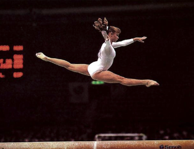

Melissa Marlowe (USA)
1987 Pan American Games UB Gold Medalist
1988 US Olympic Team Member

Melissa was born on August 25, 1971, in
Belgium. She was coached by Mark Lee at Rocky Mountain Gymnastics in Salt Lake City, UT. One of the most elegant and artistic US gymnasts of the 1980s, she competed at the 1987 world championships and the 1988 Olympic Games. Marlowe had a very successful NCAA career after leaving elite gymnastics. She competed for the University of Utah and, in her senior year, won an incredible five gold medals at the 1992 NCAA championships.
Melissa married former Utah football player Joe Clausi after graduating from college, and the couple have two children: son Joseph and daughter Milan (who's a member of the University of California Berkeley gymnastics team).
Competition Results
- 1983
- Aloha Gymfest: 1st AA (club division)
- Utah Class I Championships (children): 2nd AA, 1st V, 1st UB
-
- 1984
- Aloha Gymfest: 1st AA (club division)
- Chunichi Cup: 13th AA
- Jr. US Championships: 3rd AA
- KIPS Invitational: 2nd UB
- Tokyo Cup: 6th FX
-
- 1985
- Golden Sands International: 9th AA, 3rd UB, 3rd FX
- Jr. American Classic: 1st AA
- Jr. US Championships: 4th AA
- Jr. US Classic: 4th AA
- Kips Invitational: 3rd AA, 3rd VT, 3rd UB
-
- 1986
- American Classic: 1st AA
- KIPS Invitational: 1st AA, 1st UB, 1st FX
- NED-SUI-USA Meet: 1st Team, 1st AA
- USA-USSR Dual Meet: 2nd Team, 9th AA
- US Championships: 10th AA
-
- 1987
- American Classic: 1st AA
- Pan American Games: 1st Team, 1st UB
- USA-USSR Dual Meet: 2nd Team, 7th AA
- World Championships: 6th Team
-
- 1988
- American Classic: 1st AA
- Olympic Games: 4th Team
- USA-USSR Dual Meet: 2nd Team, 10th AA
- US Classic: 1st AA
- US Championships: 11th AA, 6th UB
- US Olympic Trials: 6th AA
-
- 1989
- NCAA Championships: 5th Team, 4th UB, 4th B
-
- 1990
- NCAA Championships: 1st Team, 2nd FX, 4th UB
-
- 1991
- NCAA Championships: 2nd Team, 1st B, 3rd FX
-
- 1992
- NCAA Championships: 1st Team, 1st AA, 1st UB, 1st B, 1st FX, 5th V
-
- 1993
- Reese's International Gymnastics Cup: 4th AA
-
This page was created on July 17, 2021.
© Gymn Forum